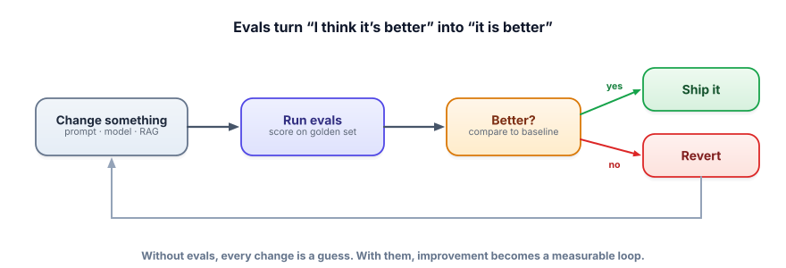

Why evals decide everything
Every track so far ended with the same word: measure it. This is the track that makes measuring a first-class skill. Evals are the single biggest thing separating people who demo LLM features from people who ship reliable ones — and most teams underinvest here badly.
The problem: you can’t improve what you can’t measure
LLM outputs are non-deterministic and open-ended, so “does it work?” has no obvious answer. Without a way to measure quality, every change — a new prompt, a different model, a tweaked RAG setting — is a guess. You change something, eyeball a few outputs, decide it “seems better,” and ship. Then it silently regresses on cases you didn’t check. Evals replace that vibe-driven loop with a measured one: define what “good” means, score it on a fixed set of examples, and only keep changes that move the number.

An eval (evaluation) measures the quality of an LLM system’s outputs against some definition of “good.” The core ingredients: a golden set (examples with known-good answers, Lesson 6.2), a metric (how you score an output — exact match, a rule, or an LLM-as-judge), and a baseline (the current version, so you can tell if a change helped). Run the metric over the golden set, compare to baseline, decide.
You don’t need a framework to start. This compares two prompt versions on a fixed set — the seed of every eval system.
# golden set: inputs with a known-correct answer/keyword
cases = [
{"q": "What's the refund window?", "must_include": "30 days"},
{"q": "How do I reset my password?", "must_include": "Settings"},
{"q": "Do you ship to Antarctica?", "must_include": "don't know"}, # edge case
]
def score(system_fn):
passed = 0
for c in cases:
out = system_fn(c["q"]).lower()
if c["must_include"].lower() in out:
passed += 1
return passed / len(cases)
print("prompt v1:", score(answer_v1)) # e.g. 0.67 (baseline)
print("prompt v2:", score(answer_v2)) # e.g. 1.00 → keep v2Crude keyword checks are just the start (Lesson 6.3 adds LLM-as-judge for fuzzy quality), but even this turns “v2 feels better” into “v2 scores 1.00 vs 0.67.” That’s the whole leap.
- LLM outputs are open-ended, so without evals every change is a guess.
- An eval needs a golden set, a metric, and a baseline to compare against.
- The loop: change → score → compare → keep or revert. Improvement becomes measurable.
- Evals catch silent regressions you’d never spot by eyeballing a few outputs.
- You can start with a 12-line harness — having any eval beats having none.
A teammate says “I improved the prompt — the three examples I tried look better, let’s ship.” What’s the most important pushback?
1. Name three things that can silently regress when you “just tweak the prompt,” that eyeballing a few outputs would miss.
2. Why is comparing to a baseline essential, rather than just looking at the new version’s score?
3. Your eval is just keyword matching and a teammate calls it “too crude to bother.” Defend starting with it anyway.
▸ Show solutions & reasoning
1. Examples: edge cases (the “I don’t know” path now hallucinates), format consistency (it sometimes drops the JSON structure), tone/safety (it got more verbose or less careful), and previously-working categories (fixing billing answers broke technical ones). A few hand-picked happy-path examples reveal none of these — only a broad, fixed set does.
2. A score in isolation is meaningless — is 0.82 good? You only know if a change helped by comparing to what you had. The baseline is the reference point that turns a number into a decision (“up from 0.74 → keep; down → revert”). Evaluation is fundamentally comparative.
3. Because any measurement beats none, and a crude eval still catches the most important failures (missing the key fact, breaking an edge case) and gives a repeatable score to compare versions. It’s the foundation you improve incrementally — add an LLM-as-judge for fuzzy quality later (6.3). Perfect is the enemy of started; a crude eval today prevents shipping a regression today.
Here’s the uncomfortable truth that separates senior practitioners: in applied GenAI, your evaluation is more valuable and more defensible than your prompt or even your model. Prompts are easy to copy and models are a commodity everyone can call — but a well-built eval set that captures exactly what “good” means for your task, including your edge cases and failure modes, is hard-won institutional knowledge. It’s what lets you adopt a new model the day it launches (just re-run the evals), confidently refactor prompts, and prove to stakeholders that quality went up. Teams that move fastest aren’t the ones with the cleverest prompts; they’re the ones with the tightest measurement loop.
This reframes the whole job. “Building an LLM feature” is really “building the eval that defines the feature, then optimizing against it.” The flywheel: ship something, watch where it fails in production, fold those failures into the golden set, and now your eval is sharper and your next iteration is safer (Lessons 6.4–6.7 make each part concrete). Most teams skip this because writing evals is less glamorous than prompt-crafting — which is exactly why doing it well is a competitive advantage. Treat the eval set as a first-class, growing asset, and everything else in this field gets easier.
Every eval rests on one thing: a set of examples with known-good answers. Let’s build that foundation well. Next: golden sets.